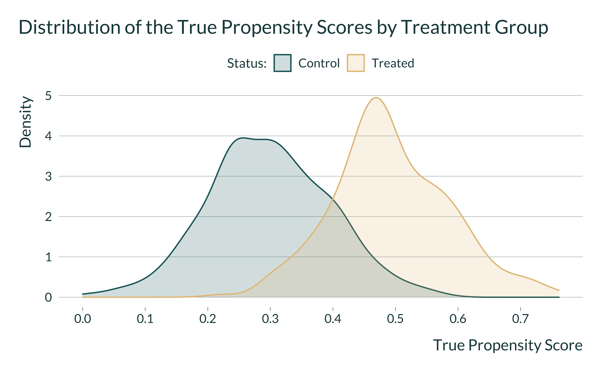
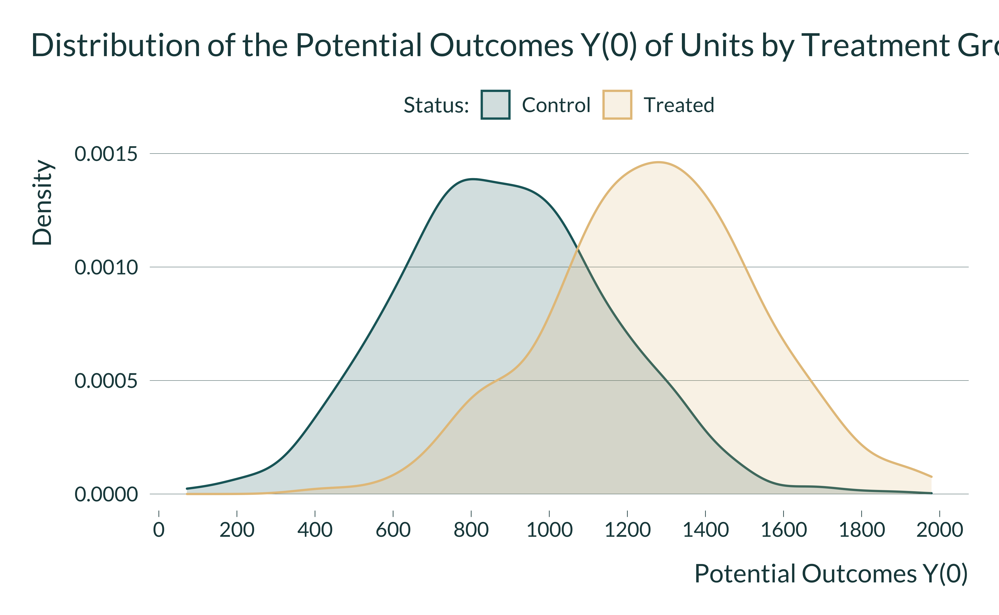

In this document, we show through simulations how matching procedures targeting the common support of the data could be under-powered and lead to inflated statistically significant estimates. We illustrate this issue with fake-data similar to those from non-randomized labor training programs. In this case, treated individuals self-select themselves to get the treatment and may therefore have different characteristics from individuals who do not enroll in the program. To estimate the causal effect of the treatment on treated, researchers can rely on matching, which is a pre-processing technique to approximate an hypothetical randomized experiment. The method has three main advantages:
- Contrary to outcome regression approach, it does not directly model the relationship between the treatment of interest and the outcome
- It adjusts non-parametrically for observed confounders
- By pruning control units not similar to treated units, matching help reveal the common support of the data upon which researchers can more confidently draw their inference. Statistical models used to analyze the resulting data will suffer less from extrapolation bias.
The method however relies on the strong assumption that no unmeasured confounders exist and, depending on its stringency, may discard many units from the analysis. This second limit could result in a lack of statistical power to estimate the average treatment on the treated. If journal editors and researchers favor studies based on the their statistical significance, under-powered studies based on matching procedures could lead to estimates that are too large.
Loading Packages
We first load the required packages to set-up the simulations:
# load required packages
library(knitr) # for creating the R Markdown document
library(tidyverse) # for data manipulation and visualization
library(MatchIt) # for matching analysis
library(lmtest) # for modifying regression standard errors
library(sandwich) # for robust and cluster robust standard errors
library(DT) # for displaying the data as tables
library(mediocrethemes) # vincent's custom ggplot2 theme
library(tictoc) # for measuring running time
library(beepr) # for making a sound when the code is done
library(here) # for paths management
# set ggplot theme
set_mediocre_all(pal = "coty")
Data Generating Procedure
General Approach
To illustrate how matching procedures could be particularly sensitive to statistically significant estimates that inflated, we simulate fake-data from a non-randomized labor training program targeting young individuals. Below are the main steps of the simulation:
- We first create the units identifiers (
id). Each unit is an individual. - Many simulations found in the applied statistics literature test the performance on matching algorithms by first simulating covariates and then simulating the true but unknown propensity to be treated of units. Our goal here is different as we do not want to test the performance of various matching algorithms but rather illustrate how a lack of common overlap in propensity scores can result in a loss statistical power. We therefore first assign a fraction of individual (
p_treat) to the treatment and then simulate the true propensity score variabletrue_psfor treated and control units. For treated units, we draw the propensity scores from a normal distribution \(N(\mu_{T}, \sigma_{T})\) and for control units, from a normal distribution \(N(\mu_{C}, \sigma_{C})\). - Once the the true propensity scores are created, we define the potential outcomes of each individual. Here, potential outcomes represent the income (in euros) of the individuals if they undertake the training program or not. The potential outcome without treatment adoption, Y(0), is simulated using the following equation: \(Y_{0} = Wage \times True Propensity Score + N(\mu_{noise}, \sigma_{noise})\). This equation makes the potential outcomes Y(0) partly different for treated and control units.
- We finally simulate the potential outcomes when individuals benefit from the training program. The average treatment effect on the treated (ATT) was set to a constant effect of +100 euros. The average treatment effect on the control (ATC) was set to a constant effect of +50. The constant treatment effect assumption is made to simply the illustration of the issue we are interested in. In our simulations, when we make the propensity score matching more stringent, not all treated units will be matched to similar control units. The causal estimand will no longer be the ATT and we should compute it true effect for each iteration if the causal effect was not constant.
Function to Generate the Data
We display below the code for the function generate_data_matching() which creates the required dataset. Its arguments are the desired sample size (sample_size), the proportion of treated units (p_treat), the mean and standard deviation of the propensity score distributions of treated and control units (mu_t, sigma_t, mu_c, sigma_c), the baseline wage wage, the noise of the equation for simulating the Y(0) (mu_noise, sigma_noise), the ATC and ATT (atc, att).
generate_data_matching <- function(sample_size,
p_treat,
mu_t,
sigma_t,
mu_c,
sigma_c,
wage,
mu_noise,
sigma_noise,
atc,
att) {
data <- tibble(id = 1:sample_size) %>%
mutate(
# assign treatment status
treatment = rbinom(n = sample_size, size = 1, prob = p_treat),
# create the propensity score distributions
true_ps = ifelse(
treatment == 0,
rnorm(n(), mean = mu_c, sd = sigma_c),
rnorm(n(), mean = mu_t, sd = sigma_t)
),
# make sure that the propensity score is between 0 and 1
true_ps = case_when(true_ps > 1 ~ 1,
true_ps < 0 ~ 0,
true_ps >= 0 & true_ps <= 1 ~ true_ps),
# generate the potential outcomes
y_0 = wage * true_ps + rnorm(n(), mean = 300, sd = 200),
y_0 = y_0 %>% round(., 0),
y_1 = ifelse(treatment == 1,
y_0 + att,
y_0 + atc),
# generate observed outcomes
y_obs = ifelse(treatment == 1, y_1, y_0) %>% round(., 0)
)
return(data)
}
In our simulations, we use the following parameters to create a data of 300 units, with about 25% being treated, and with a lack of common overlap in the propensity scores for treated and control units:
| sample_size | p_treat | mu_t | sigma_t | mu_c | sigma_c | wage | mu_noise | sigma_noise | atc | att |
|---|---|---|---|---|---|---|---|---|---|---|
| 300 | 0.25 | 0.5 | 0.1 | 0.3 | 0.1 | 2000 | 300 | 200 | 50 | 100 |
EDA for One Dataset
We run one iteration of the function generate_data_matching() to explore the resulting data with 500 units:
About 25.7% of units are treated. We display below the true propensity score distributions by treatment status:

The distribution of potential outcomes Y(0) should be different across the two groups:

We can also see how the observed revenue is distributed across the two groups:

We can check whether the ATT and ATC were correctly simulated. The ATT is computed such as:
and the ATC:
The data have been correctly simulated.
Outcome Regression Analysis
Before moving to the matching procedure, readers might be interested to see what would happen if we analyze our simulated datasets with a simple outcome regression model? Would we recover the true answer?
We first create a regression function to run a simple regression model where we simply regress the observed income on the treatment indicator:
We then simulate 1000 datasets of 300 units and run the regression model:
# first simulate simulation id
data_sim_ex <- tibble(sim_id = 1:1000) %>%
# then simulate data
mutate(data = map(
sim_id,
~ pmap_dfr(baseline_param_match, generate_data_matching)
)
) %>%
# finally run the reg analysis
mutate(results = map(data, ~ outcome_regression(.)))
# unnest the results
data_sim_ex <- data_sim_ex %>%
select(-data) %>%
unnest(results)
# saveRDS(data_sim_ex, here("Outputs/data_sim_ex.RDS"))
We plot the distribution of estimates:
data_sim_ex <- readRDS(here("Outputs/data_sim_ex.RDS"))
data_sim_ex %>%
ggplot(., aes(x = estimate)) +
geom_density(colour = NA) +
geom_vline(xintercept = mean(data_sim_ex$estimate)) +
annotate("text", x = 540, y = 0.009, label = "Mean of Estimates") +
annotate("text", x = 125, y = 0.009, label = "True ATT") +
geom_vline(xintercept = 100, colour = "#EAA95C") +
scale_x_continuous(breaks = scales::pretty_breaks(n = 10)) +
ggtitle("Distribution of Outcome Regression Estimates") +
xlab("Estimates of Treatment Effect (in euros)") + ylab("Density") +
labs(fill = 'Status:')
With an outcome regression analysis, the average of estimates is equal to 499! The outcome regression analysis suffers from extrapolation bias.
Matching Procedure
We now implement a simple matching where:
We implement below a propensity score matching procedure where:
- Each treated is matched to its most similar control unit. This is a 1:1 nearest neighbor matching without replacement.
- The distance metric used for the matching is the propensity score.
- We vary the matching distance (the caliper), which is expressed in standard deviation of the propensity score distribution. Lower value of the caliper implies a stricter matching procedure.
Propensity Score Function
We display below the code for the function ps_function() which runs the matching procedure. It takes two inputs: (i) a dataset and (ii) the value of the caliper.
# propensity score analysis function
ps_function <- function(data, caliper_value) {
# implements the propensisty score matching
matching_results <- matchit(
treatment ~ id,
distance = data$true_ps,
caliper = caliper_value,
data = data
)
# retrieves the matched dataset
data_matched <- match.data(matching_results)
# computes the proportion of matched treated units
proportion_matched <-
sum(data_matched$treatment) / sum(data$treatment) * 100
# compute the true causal effect for matched units
true_effect <-
mean(data_matched$y_1[data_matched$treatment == 1]) - mean(data_matched$y_0[data_matched$treatment == 1])
# estimate the causal effect with a simple regression model
model_fit <- lm(y_obs ~ treatment,
data = data_matched,
weights = weights)
ps_att <-
broom::tidy(coeftest(model_fit, vcov. = vcovCL, cluster = ~ subclass),
conf.int = TRUE) %>%
filter(term == "treatment") %>%
select(term, estimate, p.value, conf.low, conf.high)
# return relevant statistics
return(
bind_cols(
ps_att,
proportion_matched = proportion_matched,
true_effect = true_effect
)
)
}
We run the function on the dataset we previously created:
# testing the function
ps_function(data, caliper = 0.5) %>%
mutate_at(vars(-term), ~ round(., 1)) %>%
kable(., align = c("l", rep('c', 6)))
| term | estimate | p.value | conf.low | conf.high | proportion_matched | true_effect |
|---|---|---|---|---|---|---|
| treatment | 196.2 | 0 | 155.4 | 237.1 | 77.8 | 100 |
The function returns the estimate for the ATT, the associated \(p\)-value and 95% confidence interval, the proportion of matched treated unit and the true value of the ATT.
Simulations
We implement Monte-Carlo 300 simulations for different values of the caliper (it currently takes 24 minutes to run on a laptop computer):
sim_matching <- tibble(sim_id = 1:1000) %>%
# then simulate data
mutate(data = map(
sim_id,
~ pmap_dfr(baseline_param_match, generate_data_matching)
)) %>%
# generate caliper
crossing(caliper = c(0.01, seq(0.05, 0.4, 0.05), seq(0.4, 1, 0.1))) %>%
# finally run the matching analysis
mutate(results = map2(data, caliper, ~ ps_function(.x, .y)))
sim_matching <- sim_matching %>%
select(-data) %>%
unnest(results)
# saveRDS(sim_matching, here("Outputs/sim_matching.RDS"))
Once the simulations have been run, we compute the summary statistics using the summarise_simulations() function. We denote \(\tau\) the true value of the causal estimand and \(\widehat{\tau}\) its estimate. To illastrue the consequences of a loss of statistical power with lower values of the caliper, we compare \(\mathbb{E}\left[\left|\frac{\widehat{tau}}{\tau}\right|\right]\) and \(\mathbb{E}\left[\left|\frac{\widehat{\tau}}{\tau}\right| | signif \right]\). The first term represents the bias and the second term represents the type M error.
# load simulation results
sim_matching <- readRDS(here("Outputs/sim_matching.RDS"))
# function to compute power, type m error and bias
summarise_sim_matching <- function(data) {
data %>%
mutate(significant = (p.value <= 0.05)) %>%
group_by(caliper) %>%
summarise(
proportion_matched = mean(proportion_matched),
power = mean(significant, na.rm = TRUE)*100,
type_m = mean(ifelse(significant, abs(estimate/true_effect), NA), na.rm = TRUE),
bias_signif = mean(ifelse(significant, estimate/true_effect, NA), na.rm = TRUE),
bias_all = mean(estimate/true_effect, na.rm = TRUE),
.groups = "drop"
) %>%
ungroup()
}
We apply the function to data_simulations and plot the results:

The blue line indicates the inflation of all estimates, regardless of their statistical significance. As the value of the caliper increases, estimates are more biased: this is due to the fact that we are comparing units that are less similar. The yellow line represents the inflation of statistically significant estimates at the 5% level. We clearly see with this line the danger of editorial policies biased toward small \(p\)-values: with low values of the caliper, statistically significant estimates are inflated!
Why statistically significant estimates are inflated with low values of the caliper? The figure below gives the answer: as the value of the caliper decreases, the sample size of the matched sample is reduced and thereby the statistical power shrinks. Only large estimates can be statistically significant but these estimates are misleading.